Graph neural networks are machine learning models based on artificial neural networks that take graphs as input and, in their most basic arrangement, output graphs as well. Basic graph neural networks will only update graph features based on the input graph's connectivity, while preserving this connectivity in the output graph. Graph neural networks are the most basic tool in the larger field known as 'geometric deep learning'.
Graphs are mathematical structures representing objects with simple connections between them. Thus, they can be specified by two dimensional drawings of points (nodes) with lines (edges) between them, as below.
Note that edges may be either directed or undirected, but an undirected graph may always be represented by a directed graph with edges that all go in both directions.
From a data perspective then, we may specify a basic graph with two sets: one of node labels, and one of ordered pairs between nodes. Alternatively, we can specify a graph with an adjancency matrix or a graph Laplacian, but this may be inefficient for sparse graphs.
Further, while simple graphs in the mathematical sense require no extra structure than the above constructions, their application in the field of machine learning almost always require the association of feature vectors to the elements of the vertex or edge sets.
To be explicit, we now describe a common mathematical framework for graphs of the most elementary kind (those only with nodes and single edges betweeen them). We may then define a simple graph \(\mathcal{G}\) as a set of two sets: \(\mathcal{G}=\{\mathcal{V},\mathcal{E}\}\), where \(\mathcal{V}=\{v_1,...,v_n\}\) is the set of nodes or vertices and \(\mathcal{E}=\{e_{ij}\}\) is the set of edges, which is a set of ordered pairs of nodes where each possible pair is either in the set or not (no repeats/multi-edges).
The degree \(\mathcal{D}(\mathcal{v})\) of a vertex \(\mathcal{v}\) in a graph is the number of edges, or equivalently the number of neighbors, connected to it. If all the vertices in a graph have the same number of neighbors, the graph is termed regular, while a graph with all possible edges is termed complete.
A walk on a graph is a sequence of connected edges that connects two vertices. A path is a distinct walk and considered a closed path (or a cycle) if the intial and terminal vertices are the same. Vertices are considered connected if there exists a path between them.
The adjacency matrix of a graph is a clean generalization of the edge set \(\mathcal{E}=\{e_{ij}\}\) to a matrix \(\mathbf{A}\) with elements \[a_{ij}=\delta_{e_{ij}\in\mathcal{E}}.\] This definition is best understood through example, as below.
Adjacency matrices have several properties immediatley: they're always traceless (except in the case of hypergraphs) and they're always real. Further, undirected graphs always have real symmetric adjacency matrices.
The graph Laplacian is the discrete counterpart to the Laplacian of continuous spaces. It can be defined by introducing the vertex degree matrix \(\mathbf{D}\) with elements defined by
Spectral graph theory studies the properties of graphs through analysis of the eigenvectors and eigenvalues of a graph's adjacency matrix and it's graph Laplacian. For a nice overview of graphs and spectral graph theory, see this presentation by Radu Horaud; or this paper by Jiaqi Jiang.
The above structure has several clear generalizations, including multigraphs and hypergraphs which allow for multiple edges in one direction between the same nodes and edges between any number of nodes, respectively. These generalizations may require new structures to store information about graphs.
Multigraphs allow for multiple edges in the same direction between the same set of nodes. Hence, they may be specified still with an adjancency matrix (now with positive integer entries) and edge lists.
Hypergraphs allow for edges between any number of nodes. This requires we use adjacency tensors or edge sets with elements that aren't neccessarily just pairs of nodes. Directed edges also need to be reconsidered, since more than one permutation of edges is possible.
For an overview of hypergraph neural networks and their extensions, see this paper by Song Bai, et al.
Graph Neural Networks (GNNs) operate on graph inputs, generally with associated feature vectors and output graphs with similar connectivity but updated or 'learned' feature vectors. One layer of the simplest GNN of this form is depicted below, as an example.
The graph is taken as input as each separate feature is processed by some update function, which is generally differentiable (which may effectively be like an update function utilized in one node of an ANN).
The graph is taken as input as each separate feature is processed by some update function, which is generally differentiable (which may effectively be like an update function utilized in one node of an ANN).
Following notation in Gilmore, we can describe the different forms of these general structures by the specific definiton of their update functions. Hover over specific variables and functions below to see their definition.
Pytorch is a commonly used machine learning framework written in python. The relate module pytorch_geometric is based on pytorch and designed to facilitate the design and use of geometric machine learning (i.e. graph neural nets and their extensions). For a general overview, see this introduction included in the docs.
For a conceptual introduction to graph neural networks, see this amazing article: Intro to Graph Neural Networks. And for an overview of current literature and methods, see Zonghan Wu, et al.'s A Comprehensive Survey on Graph Neural Networks; or Jie Zhou, et al.'s Graph Neural Networks: A Review of Methods and Applications. Also see Thomas Kipf's thesis.
For resources related more specifically to graph convolutional networksgraph, see this introduction by Thomas Kipf or this wonderful distill publication.